25+ Christmas Side Dishes for Your Holiday Table
📌 Save to Pinterest
Christmas dinner is only as good as its side dishes: the table fills up with roasted vegetables, creamy potatoes, golden stuffing, bright cranberry sauce and fresh salads, and everyone finds a favorite. This roundup gathers twenty-five side dishes for your holiday table — the classics your family expects, plus a few fresh ones worth adding. Make one or make them all; either way, the turkey will not be the only star on the table.
How to pick your Christmas sides
Pick a mix, not a single style: a roasted vegetable, a creamy potato, a stuffing, something bright and tangy, and a fresh salad cover every taste. If the oven is full, choose sides that roast alongside the turkey or set in the fridge — cranberry sauce, salads and make-ahead casseroles free up space. And if you are short on time, pick sides that come together in one dish and hold well, like roasted roots and gratins.
Good to know: Everything is written in American English, and measurements use US customary units — cups, tablespoons, and Fahrenheit — for cooks in the United States. Always follow safe food-handling guidance, and check labels for allergens when cooking for others.
Food safety: the stuffing and dressing contain eggs — bake until set; egg dishes should reach 160°F (71°C). Cook bacon until crisp..
Roasted vegetables & holiday classics
These are the sides most people picture when they think of a Christmas dinner — the ones that have been on the table for generations.
1. Garlic Butter Roasted Brussels Sprouts
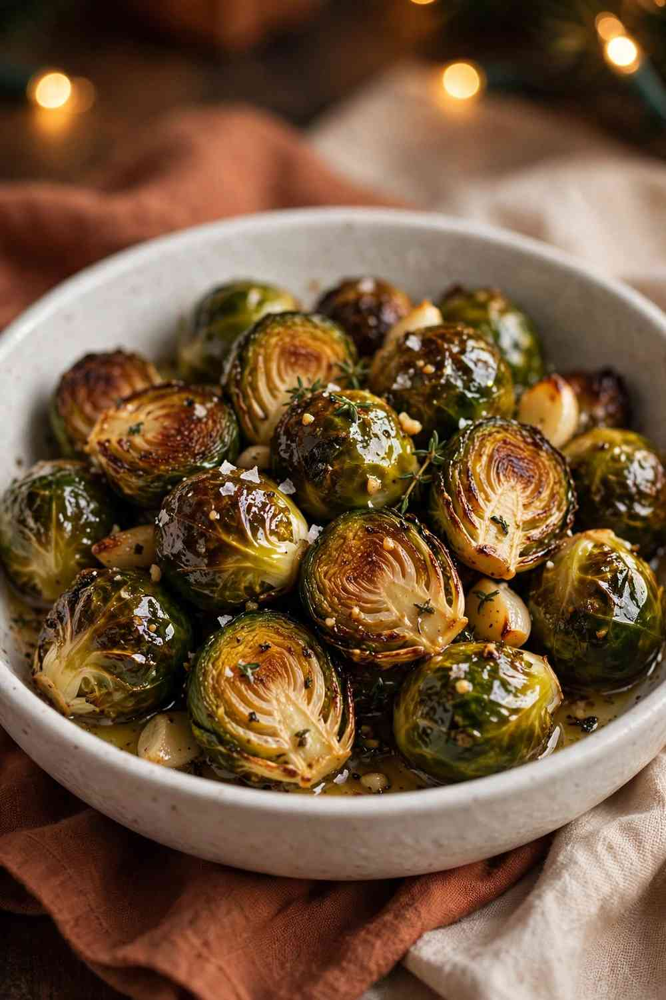
These Brussels sprouts roast at high heat until the outer leaves turn crisp and caramelized while the centers stay tender and sweet. A toss of garlic and butter in the last few minutes coats every sprout in a savory, garlicky gloss. They are a side that converts skeptics, and they belong on any Christmas table beside roast turkey or ham.
Ingredients
- 2 lbs Brussels sprouts
- 3 tbsp olive oil
- 4 garlic cloves
- 2 tbsp butter
- salt and pepper.
Directions
- Preheat the oven to 425°F and line a large rimmed baking sheet with parchment paper.
- Trim the stem ends, pull off any yellowed leaves, and cut each sprout in half from top to bottom.
- Toss the halved sprouts in a large bowl with the olive oil, salt, and black pepper until evenly coated.
- Spread the sprouts on the baking sheet in a single layer, cut-side down, with space between them so they roast, not steam.
- Roast for 20 minutes, until the cut sides are deeply browned and the sprouts are nearly tender.
- Mince the garlic. Scatter it over the sprouts and dot the butter in small pieces across the pan.
- Return the pan to the oven and roast for 5 more minutes, until the garlic is fragrant and the edges are crisp. Toss and serve hot.
2. Creamy Garlic Mashed Potatoes
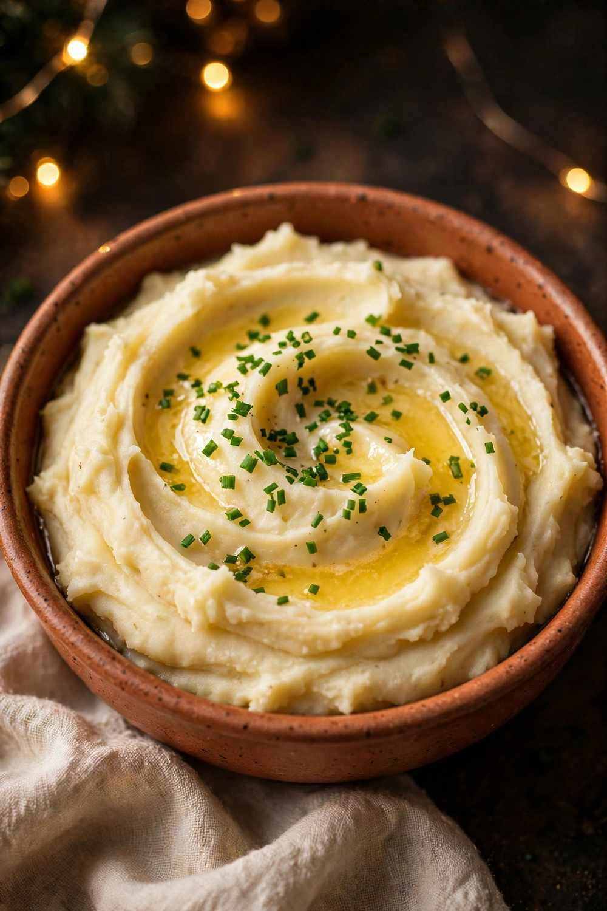
Yukon Gold potatoes mash into a smooth, buttery pile with warm milk, butter, and garlic folded through. The garlic warms gently in the milk so its flavor is mellow, not sharp, and the potatoes stay silky rather than gluey. Make them ahead, keep them warm, and they will be the first bowl emptied at the Christmas table.
Ingredients
- 3 lbs Yukon Gold potatoes
- 1/2 cup butter
- 1 cup warm milk
- 4 garlic cloves
- salt and pepper.
Directions
- Cut the potatoes into even 2-inch chunks so they cook at the same rate.
- Put them in a large pot, cover with cold water by an inch, and add a generous pinch of salt.
- Bring to a boil, then simmer for 15 to 20 minutes, until very tender when pierced with a fork.
- Meanwhile, melt the butter in a small saucepan over low heat. Add the minced garlic and milk and warm gently for 2 to 3 minutes, until fragrant. Do not let the milk boil.
- Drain well and return the potatoes to the hot pot for 1 minute to dry off.
- Mash the potatoes, then pour in the warm butter, milk, and garlic a little at a time, mashing and stirring until smooth and creamy.
- Season with salt and pepper to taste and serve hot.
3. Honey Glazed Carrots
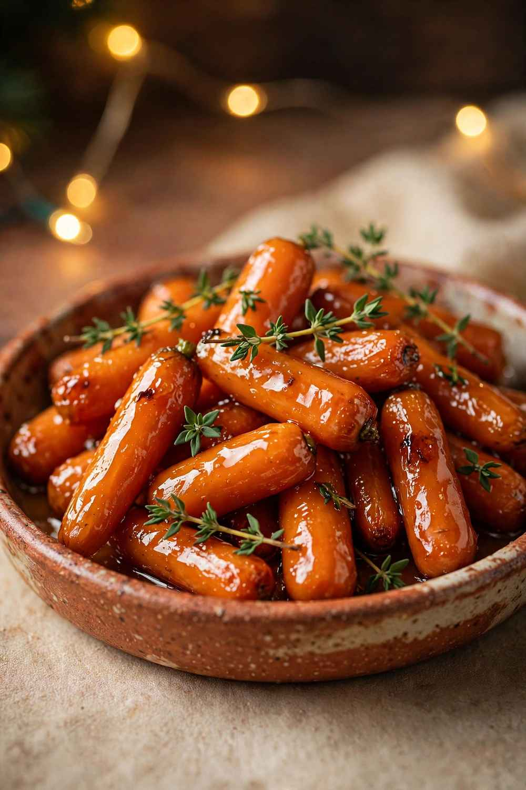
Carrots roast until their edges caramelize and their centers turn tender and sweet, then get tossed in honey, butter, and brown sugar for a shiny glaze. Fresh thyme adds a woodsy note that keeps the sweetness in check. They are simple, colorful, and bright on a crowded holiday plate, and they pair with almost any main dish.
Ingredients
- 2 lbs carrots
- 3 tbsp honey
- 2 tbsp butter
- 1 tbsp brown sugar
- fresh thyme.
Directions
- Preheat the oven to 400°F and line a large rimmed baking sheet with parchment paper.
- Peel the carrots and cut them into sticks about 3 inches long and 1/2 inch thick.
- Spread the carrot sticks in a single layer on the baking sheet, leaving a little space between them so they roast rather than steam.
- Roast for 20 minutes, turning once halfway through, until starting to soften and brown at the edges.
- Meanwhile, melt the remaining butter in a small bowl and stir in the honey and brown sugar until smooth.
- Pull the pan from the oven, drizzle the honey mixture over the carrots, and toss to coat every stick.
- Return the pan to the oven and roast for 10 more minutes, until the carrots are tender and glazed. Scatter fresh thyme leaves over the top and serve hot.
4. Classic Bread Stuffing with Sage
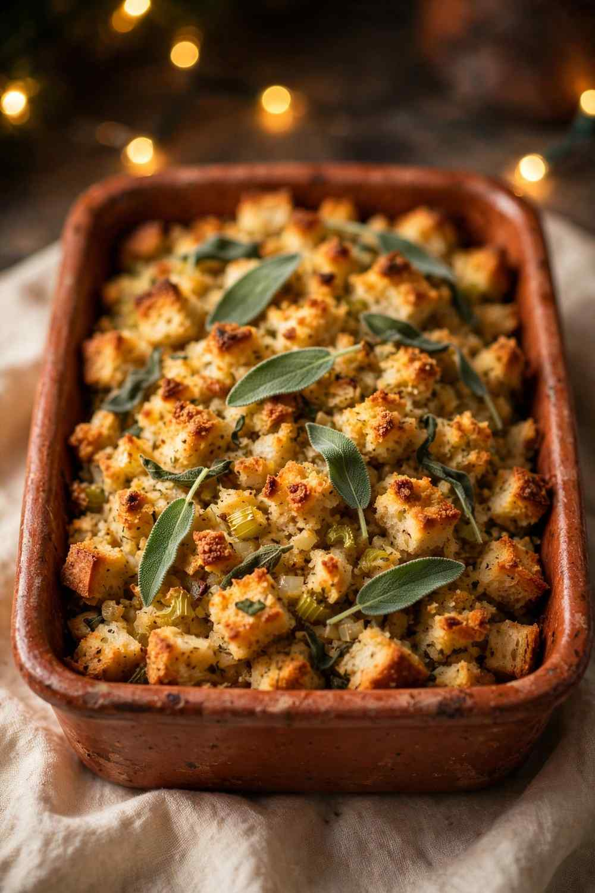
Dried bread cubes soak up buttery onion, celery, sage, and chicken broth, then bake into a stuffing that is soft and savory inside with a golden, crisp top. Sage gives it the classic holiday flavor that tastes like Christmas dinner itself. Bake it in its own dish so it stays moist, and serve it straight from the oven.
Ingredients
- 12 cups dried bread cubes
- 1 onion
- 3 celery stalks
- 1/2 cup butter
- 2 tsp sage
- 2 cups chicken broth
- 2 eggs.
Directions
- Preheat the oven to 350°F and grease a 9x13-inch baking dish.
- Dice the onion and celery, then melt the butter in a large skillet over medium heat.
- Cook the onion and celery in the butter for 6 to 8 minutes, stirring often, until soft and translucent.
- Put the bread cubes in a large bowl, sprinkle with the sage, and add the onion and celery with all the butter from the skillet.
- In a bowl, whisk the chicken broth and eggs together, then pour it over the bread and toss gently until every cube is moistened.
- Transfer the stuffing to the greased dish and spread it into an even layer. Cover tightly with foil.
- Bake covered for 30 minutes, then uncovered for 15 minutes more, until the top is golden and crisp. Rest for 5 minutes before serving.
Food safety: the stuffing and dressing contain eggs — bake until set; egg dishes should reach 160°F (71°C).
5. Green Bean Casserole
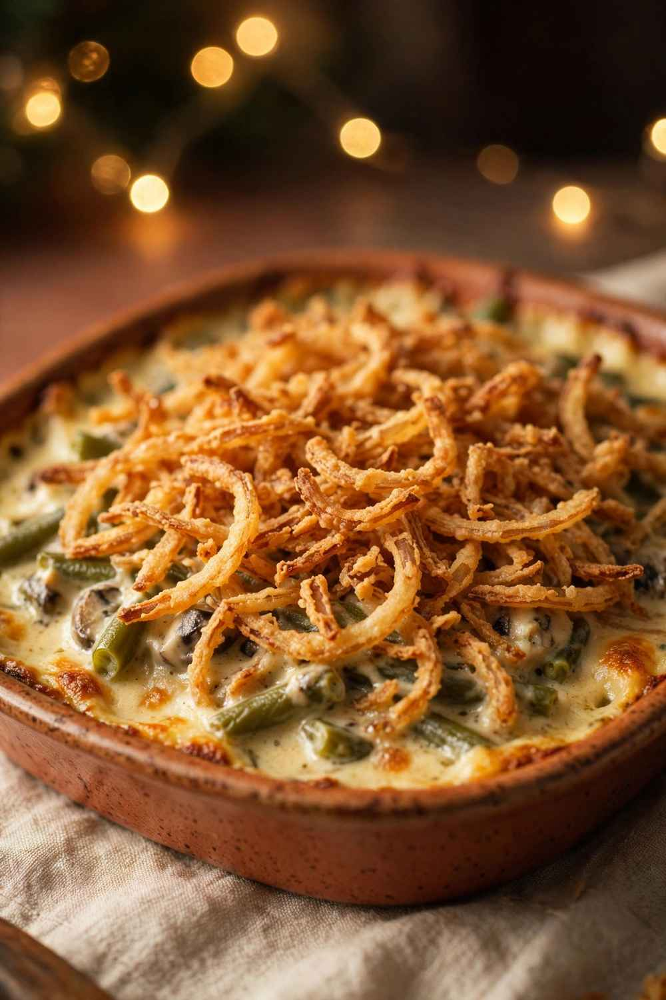
Tender green beans fold into a creamy mushroom sauce with melted cheddar, then bake under a blanket of crispy fried onions that turn golden and crunchy. It is the classic casserole everyone looks for on the holiday table, rich and comforting, with that satisfying contrast between the creamy beans below and the crisp topping above.
Ingredients
- 2 lbs green beans
- 1 can cream of mushroom soup
- 1/2 cup milk
- 1 cup shredded cheddar
- 1 1/2 cups fried onions.
Directions
- Preheat the oven to 350°F and grease a 9x13-inch baking dish.
- Trim the ends off the green beans and cut them into 2-inch pieces if they are very long.
- Bring a large pot of salted water to a boil and blanch the green beans for 4 minutes, until bright green and just tender.
- Drain the beans and rinse them briefly under cold water to stop the cooking, then drain again well.
- In a large bowl, stir together the cream of mushroom soup, milk, and shredded cheddar until smooth, then fold in the blanched green beans.
- Spread the mixture into the greased dish in an even layer and sprinkle the fried onions evenly over the top.
- Bake for 30 minutes, until the casserole is bubbling at the edges and the onion topping is golden and crisp. Let it rest for 5 minutes before serving.
Sauces, sweet potatoes & creamy sides
A little sweet, a little tangy, a little creamy — these sides balance the richness of the main course.
6. Cranberry Orange Sauce

Fresh cranberries simmer with orange juice, sugar, and zest until they burst into a bright, jewel-red sauce, warmed by a cinnamon stick. It is tart, sweet, and fragrant all at once, and it cuts through rich roast meats beautifully. Make it ahead and chill it; it thickens as it cools and keeps well in the fridge for days.
Ingredients
- 12 oz fresh cranberries
- 1 cup sugar
- 1 cup orange juice
- zest of 1 orange
- 1 cinnamon stick.
Directions
- Zest the orange, then rinse and pick over the cranberries, discarding any soft or shriveled ones.
- Combine the sugar, orange juice, and orange zest in a medium saucepan and set it over medium heat.
- Stir as the mixture comes to a simmer and cook for 2 to 3 minutes, until the sugar has fully dissolved.
- Add the cranberries and the cinnamon stick, stir once, and bring the mixture back to a gentle simmer.
- Cook for 8 to 10 minutes, stirring occasionally, until most of the cranberries have burst and the sauce has thickened. It will thicken more as it cools.
- Remove the cinnamon stick and let the sauce cool to room temperature, then transfer it to a serving bowl or covered container. Serve at room temperature or chilled.
7. Roasted Sweet Potatoes with Maple

Sweet potato wedges roast until their edges caramelize and their centers turn soft and almost creamy, then get drizzled with maple syrup and a dusting of cinnamon. The maple deepens the potatoes' natural sweetness while the cinnamon adds warmth. They are a colorful, crowd-pleasing side that needs almost no work and fits any holiday spread.
Ingredients
- 3 lbs sweet potatoes
- 3 tbsp olive oil
- 2 tbsp maple syrup
- 1 tsp cinnamon
- salt.
Directions
- Preheat the oven to 425°F and line a large rimmed baking sheet with parchment paper.
- Peel the sweet potatoes and cut them into wedges about 1 inch thick at the wide end, keeping the pieces roughly the same size so they cook evenly.
- Toss the wedges in a large bowl with the olive oil and a good pinch of salt until evenly coated.
- Spread the wedges on the baking sheet in a single layer, cut-side down, leaving space between them so the edges crisp.
- Roast for 15 minutes, then flip each wedge with a spatula and roast for 15 more minutes, until the sweet potatoes are tender and browned at the edges.
- Transfer the hot wedges to a serving bowl, drizzle with the maple syrup, and sprinkle the cinnamon over the top. Toss gently to coat and serve warm.
8. Creamed Spinach

Fresh spinach wilts down into a rich, garlicky cream sauce with melted Parmesan and just a pinch of nutmeg. It is smooth, savory, and deeply comforting, the kind of side that makes a holiday plate feel complete. Serve it in a warm bowl alongside roast meats, and it will disappear faster than you expect.
Ingredients
- 2 lbs fresh spinach
- 2 tbsp butter
- 2 garlic cloves
- 1 cup cream
- 1/2 cup Parmesan
- pinch of nutmeg.
Directions
- Working in batches, wilt the spinach in a large dry pot over medium heat for 2 to 3 minutes per batch, until just collapsed.
- Transfer the spinach to a colander, let it cool briefly, then squeeze it very dry. Chop it coarsely.
- Mince the garlic. Melt the butter in a large skillet over medium heat.
- Cook the garlic in the butter for about 1 minute, until fragrant but not browned.
- Pour in the cream, bring it to a gentle simmer, and stir in the Parmesan until it melts.
- Stir in the chopped spinach and the pinch of nutmeg, mixing until the spinach is evenly coated in the cream sauce.
- Simmer for 5 minutes, stirring occasionally, until heated through and slightly thickened. Season with salt and serve hot.
9. Balsamic Roasted Beets

Beets roast until sweet and tender, then get tossed in a tangy balsamic and honey glaze that clings to every cube. Crumbled goat cheese adds a creamy, salty contrast, and walnuts bring crunch. The deep red color looks beautiful on a Christmas table, and the sweet-tart flavor pairs well with rich roasts and creamy sides.
Ingredients
- 2 lbs beets
- 3 tbsp olive oil
- 2 tbsp balsamic vinegar
- 1 tbsp honey
- goat cheese
- walnuts.
Directions
- Preheat the oven to 400°F and line a large rimmed baking sheet with parchment paper.
- Peel the beets and cut them into even 1-inch cubes so they roast at the same rate.
- Toss the beet cubes in a large bowl with the olive oil and a good pinch of salt until evenly coated.
- Spread the beets on the baking sheet in a single layer and roast for 35 minutes, stirring once halfway through, until tender when pierced with a fork.
- While the beets roast, whisk the balsamic vinegar and honey together in a small bowl.
- Transfer the hot beets to a serving bowl and toss with the balsamic and honey mixture until every cube is glossy and coated.
- Crumble the goat cheese over the top and scatter the walnuts over the beets. Serve warm or at room temperature.
10. Cheesy Scalloped Potatoes

Thin potato slices layer into a baking dish and soak in a garlicky cream sauce with thyme, then bake under melted Gruyere until the top is golden and bubbling. The potatoes turn tender and rich, and the edges go crisp and cheesy. It is a make-ahead-friendly classic that anchors the Christmas table and feeds a crowd.
Ingredients
- 3 lbs potatoes
- 2 cups cream
- 2 cups shredded Gruyere
- 3 garlic cloves
- 1 tsp thyme.
Directions
- Preheat the oven to 375°F and grease a 9x13-inch baking dish with butter.
- Peel the potatoes and slice them about 1/8 inch thick with a sharp knife or mandoline, then pat dry.
- Layer the slices in the greased dish, overlapping them slightly.
- Warm the cream in a saucepan over medium heat with the minced garlic and thyme for 3 to 4 minutes, until fragrant and just starting to steam. Do not let it boil.
- Pour the hot cream over the potatoes, pressing the slices down gently so the cream settles between them.
- Sprinkle the shredded Gruyere evenly over the top and cover the dish loosely with foil.
- Bake covered for 40 minutes, then uncovered for 15 minutes more, until the potatoes are tender and the top is golden and bubbling. Rest for 10 minutes before serving.
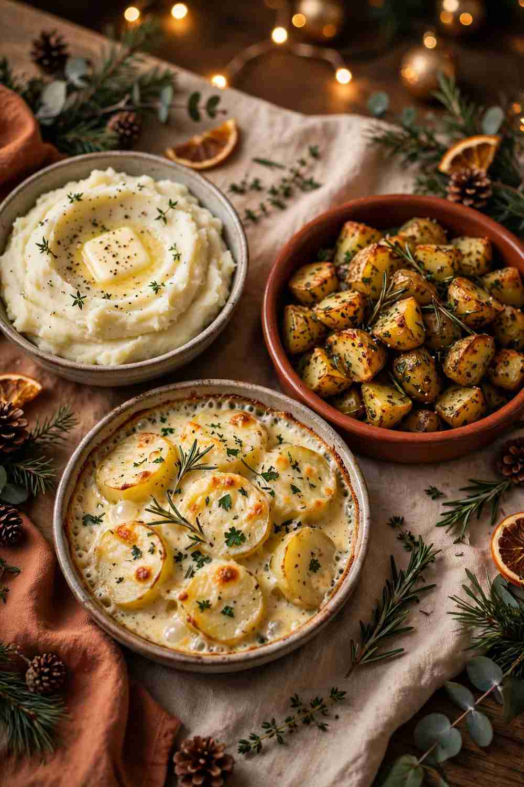
Squash, dressing & salads
Squash and dressing bring the warmth, and a fresh salad keeps the table from feeling too heavy.
11. Roasted Butternut Squash with Sage

Butternut squash cubes roast until caramelized at the edges and soft and sweet inside, then get tossed with crisped sage leaves and a little brown sugar. The sage turns fragrant and crackly in the hot oven, and the sugar deepens the squash's natural sweetness. It is a warm, golden side that tastes like the holidays in every bite.
Ingredients
- 1 butternut squash
- 3 tbsp olive oil
- 8 sage leaves
- 2 tbsp brown sugar
- salt and pepper.
Directions
- Preheat the oven to 425°F and line a large rimmed baking sheet with parchment paper.
- Peel the squash, halve it, and scoop out the seeds. Cut the flesh into even 1-inch cubes.
- Toss the squash cubes in a large bowl with the olive oil, a good pinch of salt, and a few grinds of black pepper until evenly coated.
- Spread the cubes on the baking sheet in a single layer, leaving space between them so they roast rather than steam.
- Roast for 25 minutes, turning once halfway through, until tender and browned at the edges.
- Scatter the sage leaves and brown sugar over the squash and return the pan to the oven.
- Roast for 5 more minutes, until the sage leaves are crisp and the sugar has melted into a light glaze. Toss gently and serve hot.
12. Cornbread Dressing

Crumbled cornbread bakes with buttery onion, celery, poultry seasoning, and chicken broth into a moist, crumbly Southern-style dressing with a golden top. It is savory and hearty, with the slightly sweet corn flavor that sets it apart from bread stuffing. Serve it warm from the dish, cut into squares, alongside turkey or ham.
Ingredients
- 6 cups crumbled cornbread
- 1 onion
- 2 celery stalks
- 1/2 cup butter
- 2 tsp poultry seasoning
- 2 cups chicken broth
- 2 eggs.
Directions
- Preheat the oven to 350°F and grease a 9x13-inch baking dish.
- Dice the onion and celery, then melt the butter in a large skillet over medium heat.
- Cook the onion and celery in the butter for 6 to 8 minutes, stirring often, until soft and translucent.
- Put the crumbled cornbread in a very large bowl and sprinkle the poultry seasoning over it. Add the softened onion and celery with all the butter from the skillet.
- In a separate bowl, whisk the chicken broth and eggs together, then pour the mixture over the cornbread and stir gently until everything is evenly moistened.
- Transfer the dressing to the greased dish and spread it into an even layer, pressing it down lightly.
- Bake for 40 minutes, until the top is golden brown and the center is set. Let it rest for 5 minutes before serving.
Food safety: the stuffing and dressing contain eggs — bake until set; egg dishes should reach 160°F (71°C).
13. Winter Kale and Apple Salad
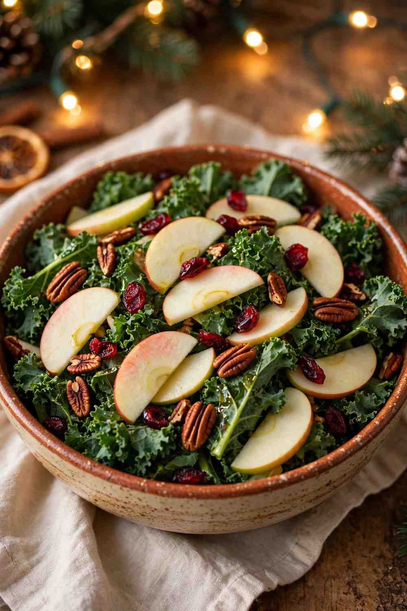
Massaged kale turns tender and silky, then gets tossed with crisp apple slices, chewy dried cranberries, and crunchy pecans. A simple dressing of olive oil, lemon juice, and honey ties it all together with brightness and a touch of sweetness. It is the fresh, crunchy counterpoint a rich Christmas table needs, and it holds up well before serving.
Ingredients
- 2 bunches kale
- 2 apples
- 1/2 cup dried cranberries
- 1/2 cup pecans
- 1/4 cup olive oil
- 2 tbsp lemon juice
- 1 tbsp honey.
Directions
- Strip the kale leaves from the tough stems and tear them into bite-sized pieces. Dry well.
- Put the kale in a large bowl, drizzle over a little of the olive oil, and massage for 2 to 3 minutes, until the leaves darken, soften, and shrink slightly.
- Core the apples and slice them thin. Add the apple slices, dried cranberries, and pecans to the bowl with the kale and toss gently to combine.
- In a small bowl, whisk together the remaining olive oil, lemon juice, and honey until the dressing is smooth and slightly thickened.
- Just before serving, pour the dressing over the salad and toss well so every leaf is lightly coated.
- Taste and adjust with a little more lemon juice or honey if you like, then transfer to a serving bowl and serve at once.
14. Bacon-Wrapped Green Beans
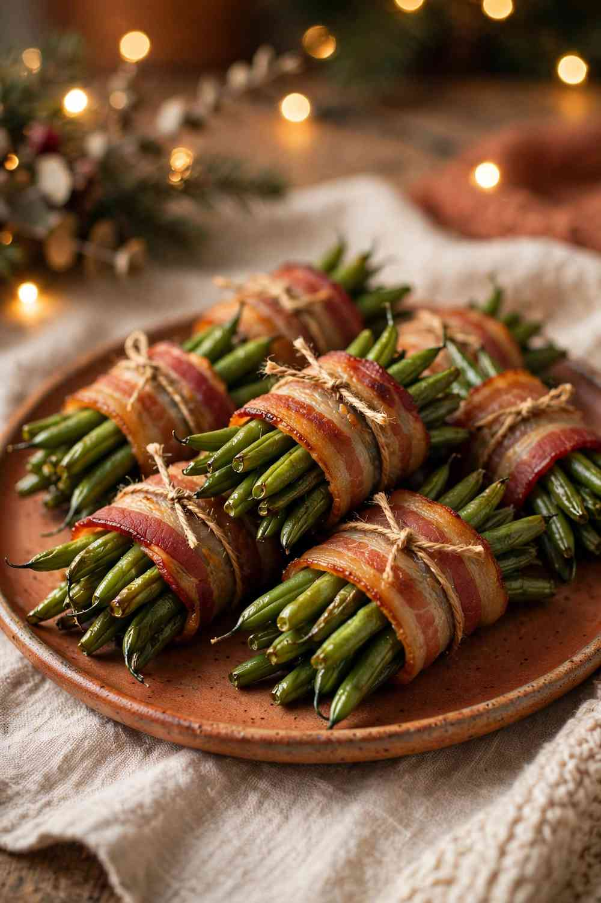
Tender green beans get gathered into little bundles, wrapped in smoky bacon, and brushed with brown sugar and soy sauce before baking. The bacon crisps around the beans while the glaze turns sticky and caramelized. They look impressive on a serving platter, taste salty and sweet at once, and vanish quickly from any holiday table.
Ingredients
- 1 lb green beans
- 8 slices bacon
- 2 tbsp brown sugar
- 1 tbsp soy sauce
- garlic powder.
Directions
- Preheat the oven to 400°F and line a rimmed baking sheet with parchment paper.
- Trim the ends off the green beans and bring a large pot of salted water to a boil.
- Blanch the beans for 3 minutes, until bright green and just tender, then drain, rinse briefly under cold water, and pat dry.
- Gather the beans into 8 bundles of 6 to 8 beans each. Wrap one slice of bacon snugly around each bundle and set them seam-side down on the baking sheet.
- In a small bowl, stir the brown sugar and soy sauce together with a pinch of garlic powder until the sugar starts to dissolve.
- Brush the mixture generously over the top and sides of each bacon-wrapped bundle.
- Bake for 20 minutes, until the bacon is crisp and the glaze is bubbling and caramelized. Serve hot.
Food safety: cook the bacon until crisp.
15. Roasted Parsnips and Carrots
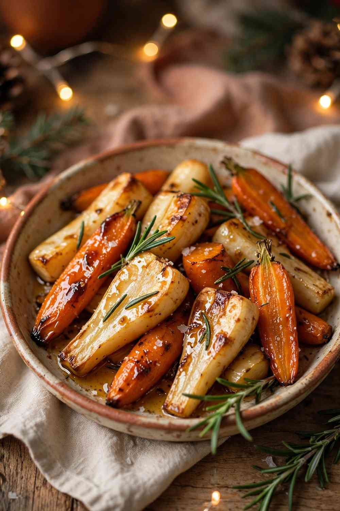
Parsnips and carrots roast together until their edges caramelize and their centers turn sweet and tender, then get finished with honey and rosemary. The parsnips bring an earthy sweetness that balances the carrots, and the rosemary adds a piney, festive note. It is a simple root-vegetable side that looks rustic and tastes like winter.
Ingredients
- 1 lb parsnips
- 1 lb carrots
- 3 tbsp olive oil
- 2 tbsp honey
- 1 tsp rosemary
- salt.
Directions
- Preheat the oven to 425°F and line a large rimmed baking sheet with parchment paper.
- Peel the parsnips and carrots and cut them into sticks about 3 inches long and 1/2 inch thick, keeping the pieces roughly the same size so they cook evenly.
- Toss the sticks in a large bowl with the olive oil and a good pinch of salt until evenly coated.
- Spread the vegetables on the baking sheet in a single layer, with space between them so the edges crisp.
- Roast for 15 minutes, then turn the sticks with a spatula and roast for 15 more minutes, until tender and browned at the edges.
- Transfer the hot vegetables to a serving dish, drizzle with the honey, and sprinkle the rosemary over the top. Toss gently to coat and serve warm.
Grains, gratins & roasted roots
Grains and gratins are the comfort food of the side-dish table, and roasted roots round it out.
16. Cranberry Walnut Wild Rice Pilaf
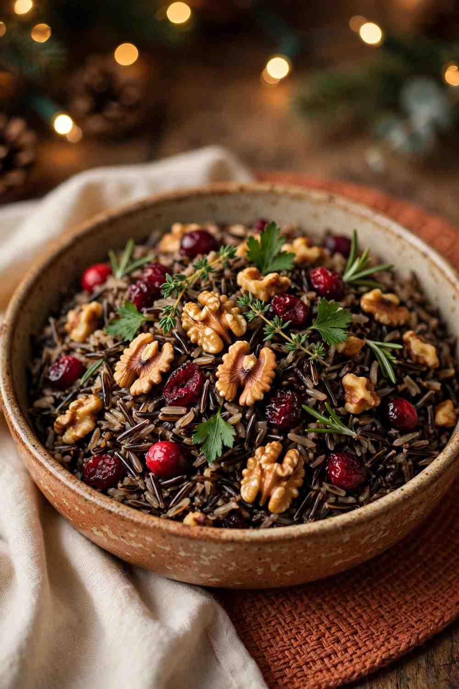
Wild rice simmers in broth until nutty and tender, then gets tossed with sweet dried cranberries, crunchy walnuts, and softened onion cooked in butter. The red cranberries and dark rice look festive in the bowl, and the flavors are savory, sweet, and earthy all at once. It is a hearty grain side that pairs well with turkey or ham.
Ingredients
- 2 cups wild rice blend
- 4 cups broth
- 1/2 cup dried cranberries
- 1/2 cup walnuts
- 1 onion
- 2 tbsp butter.
Directions
- Rinse the wild rice blend in a fine-mesh strainer under cold water and drain well.
- Combine the rice and broth in a medium saucepan and bring to a boil over high heat.
- Reduce the heat to low, cover the pan, and simmer for about 45 minutes, until the rice is tender and most of the broth has been absorbed. Drain any extra liquid.
- While the rice cooks, dice the onion. Melt the butter in a large skillet over medium heat.
- Cook the onion in the butter for 6 to 8 minutes, stirring often, until soft and lightly golden.
- Add the cooked rice to the skillet along with the dried cranberries and walnuts, and stir gently until everything is combined and heated through.
- Taste and season with salt and pepper, then transfer to a serving bowl and serve warm.
17. Cauliflower Gratin

Steamed cauliflower florets bake under a creamy cheese sauce and a golden breadcrumb crust, coming out bubbling and rich. The white sauce keeps the cauliflower tender while the cheddar adds sharpness and the topping goes crisp. It is comfort food that feels a little elegant, and it works beautifully next to roast meats and stuffing.
Ingredients
- 1 head cauliflower
- 2 tbsp butter
- 2 tbsp flour
- 1 1/2 cups milk
- 1 cup shredded cheddar
- 1/2 cup breadcrumbs.
Directions
- Preheat the oven to 375°F and grease a medium baking dish.
- Cut the cauliflower into even florets and steam for 5 to 6 minutes, until just tender. Drain well.
- Melt the butter in a medium saucepan over medium heat, then whisk in the flour and cook for 1 minute, stirring constantly, until smooth and bubbly.
- Slowly pour in the milk, whisking constantly so no lumps form, then cook for 3 to 4 minutes, until the sauce coats the back of a spoon.
- Remove the pan from the heat and stir in the shredded cheddar until it melts into the sauce. Season with salt and pepper.
- Arrange the cauliflower in the greased dish, pour the cheese sauce evenly over the top, and sprinkle with the breadcrumbs.
- Bake for 25 minutes, until bubbling and golden brown on top. Rest for 5 minutes before serving.
18. Herb Roasted Potatoes
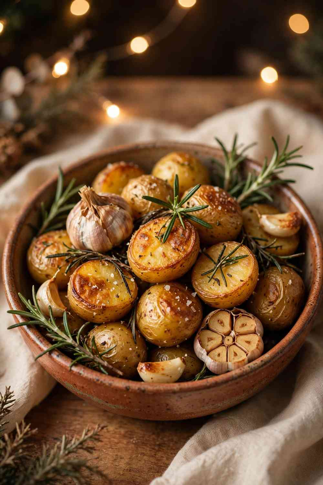
Baby potatoes roast cut-side down in olive oil with garlic, rosemary, and thyme until the outsides turn crisp and golden and the insides stay fluffy. A sprinkle of flaky salt at the end makes every bite pop. They are the simplest potato side on the table and one of the most loved, especially with roast meats and rich gravy.
Ingredients
- 3 lbs baby potatoes
- 1/4 cup olive oil
- 4 garlic cloves
- 1 tbsp rosemary
- 1 tsp thyme
- flaky salt.
Directions
- Preheat the oven to 425°F and line a large rimmed baking sheet with parchment paper.
- Scrub the baby potatoes and cut them in half. Pat them dry so they crisp up in the oven.
- Mince the garlic and chop the rosemary. Toss the potatoes in a large bowl with the olive oil, garlic, rosemary, and thyme until evenly coated.
- Spread the potatoes on the baking sheet in a single layer, cut-side down, leaving space between them so they roast rather than steam.
- Roast for 35 minutes, without turning, until the cut sides are deep golden brown and crisp and the potatoes are tender when pierced with a fork.
- Transfer the hot potatoes to a serving bowl and sprinkle generously with flaky salt. Toss once and serve hot.
19. Maple Roasted Acorn Squash
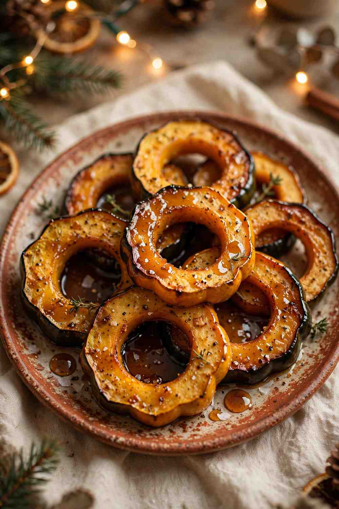
Acorn squash slices into rings that roast until tender and caramelized, brushed with maple syrup and butter and dusted with cinnamon. The rings hold their shape and look beautiful on a platter, with a sweet glaze that pools in the center. It is a simple, seasonal side that tastes like fall and winter in every bite.
Ingredients
- 2 acorn squash
- 3 tbsp maple syrup
- 2 tbsp butter
- 1 tsp cinnamon
- salt.
Directions
- Preheat the oven to 400°F and line a large rimmed baking sheet with parchment paper.
- Cut each acorn squash crosswise into rings about 1/2 inch thick. Scoop out the seeds and stringy bits from the center of each ring.
- Melt the butter in a small bowl and stir in the maple syrup until combined.
- Lay the squash rings in a single layer on the baking sheet and brush the tops generously with the maple butter mixture. Sprinkle lightly with salt.
- Roast for 15 minutes, then flip each ring, brush the second side with the remaining maple butter, and sprinkle with the cinnamon.
- Roast for 15 more minutes, until the squash is tender when pierced with a fork and caramelized at the edges. Transfer to a platter and serve warm.
20. Pomegranate Brussels Sprout Salad
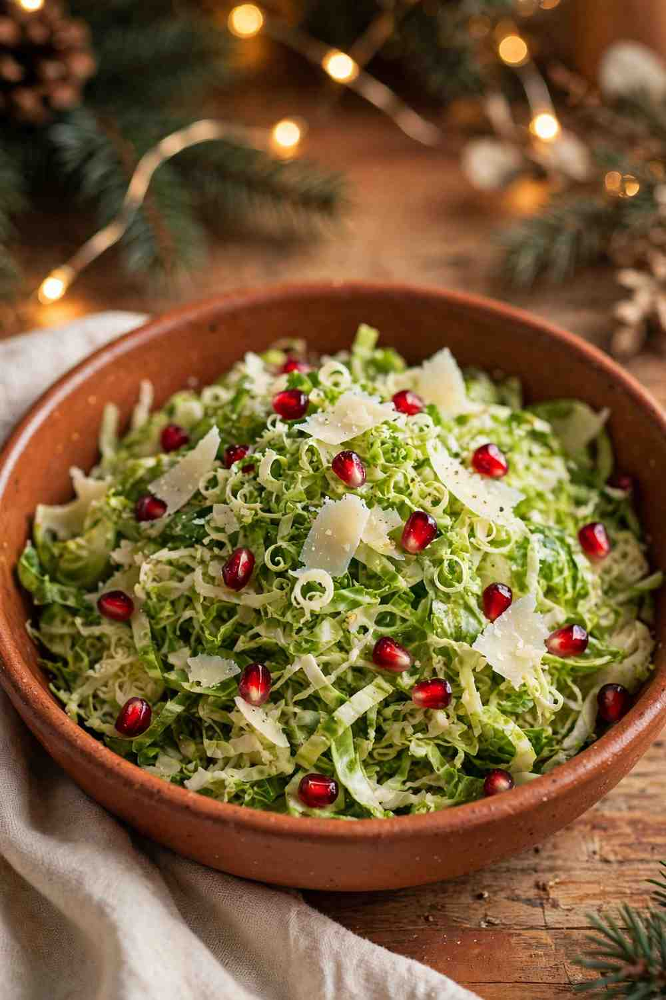
Raw Brussels sprouts shaved paper-thin turn into a crisp, fresh salad, brightened by jewel-like pomegranate seeds and salty shaved Parmesan. A light dressing of olive oil, lemon juice, and honey ties it together without weighing it down. It is crunchy, colorful, and refreshing, the bright note a rich Christmas table needs.
Ingredients
- 1 lb Brussels sprouts
- 1 cup pomegranate seeds
- 1/2 cup shaved Parmesan
- 1/4 cup olive oil
- 2 tbsp lemon juice
- 1 tbsp honey.
Directions
- Trim the stem ends of the Brussels sprouts and pull off any yellowed outer leaves.
- Shave the sprouts very thin with a sharp knife or a mandoline, working from the top down, and put the shavings in a large bowl. Break apart any thick pieces with your fingers.
- Add the pomegranate seeds and shaved Parmesan to the bowl and toss gently to combine.
- In a small bowl, whisk together the olive oil, lemon juice, and honey until the dressing is smooth and slightly thickened.
- Just before serving, pour the dressing over the salad and toss well so the shavings are lightly coated.
- Taste and adjust with a little more lemon juice or honey if you like, then transfer to a serving bowl and serve at once.
Casseroles & bright finishes
These are the showpieces and the bright finishes — the dishes that make the whole table look like a celebration.
21. Sweet Potato Casserole with Marshmallows
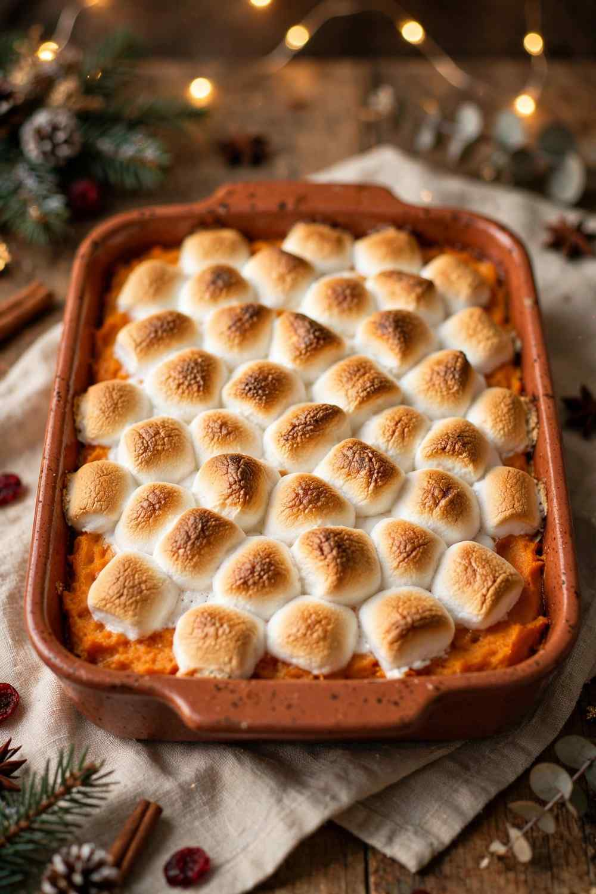
Sweet potatoes mash with brown sugar, butter, and vanilla into a smooth, sweet base, then bake under a blanket of mini marshmallows that puff and toast golden. It is the holiday classic everyone expects, rich and dessert-like, with the contrast of creamy potatoes below and gooey, crisp-topped marshmallows above. Serve it warm from the dish.
Ingredients
- 3 lbs sweet potatoes
- 1/2 cup brown sugar
- 1/4 cup butter
- 1 tsp vanilla
- 2 cups mini marshmallows.
Directions
- Peel the sweet potatoes and cut them into even 2-inch chunks.
- Put them in a large pot, cover with cold water, and bring to a boil.
- Simmer for 15 to 20 minutes, until very tender when pierced with a fork. Drain well.
- Return them to the hot pot and mash until smooth, then stir in the brown sugar, butter, and vanilla until the butter has melted.
- Preheat the oven to 350°F and grease a 9x13-inch baking dish. Spread the mashed sweet potatoes in the dish in an even layer.
- Sprinkle the mini marshmallows evenly over the top, covering the surface completely.
- Bake for 20 minutes, until the marshmallows are puffed and golden brown on top. Let the casserole rest for 5 minutes before serving.
22. Garlic Butter Mushrooms
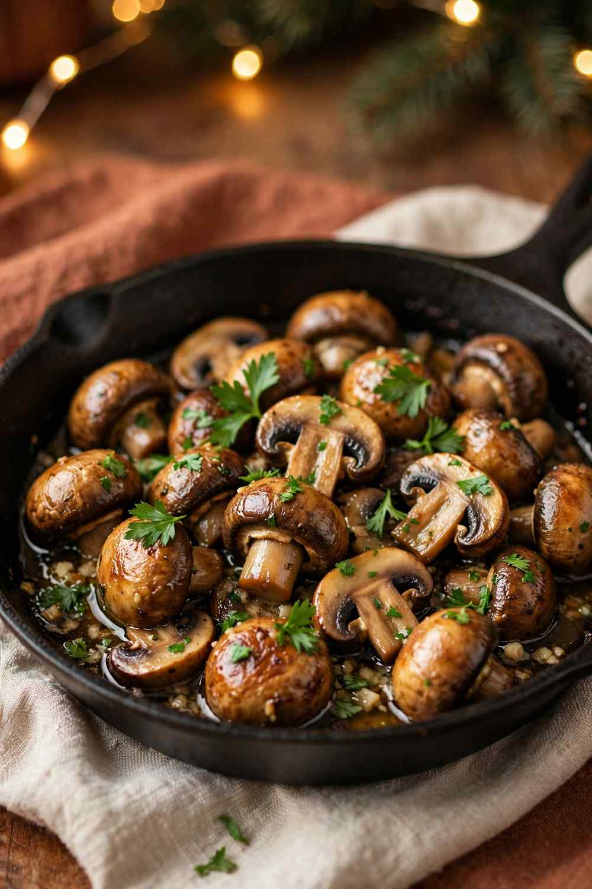
Mushrooms cook in butter until deeply browned and savory, then get finished with garlic, a splash of soy sauce, and fresh parsley. They are quick, earthy, and full of flavor, with a glossy, garlicky coating that makes them taste far richer than their short cooking time suggests. Serve them hot as a side or spooned over meats.
Ingredients
- 1 lb mushrooms
- 3 tbsp butter
- 3 garlic cloves
- 1 tbsp soy sauce
- fresh parsley.
Directions
- Wipe the mushrooms clean with a damp paper towel and trim the stem ends. Cut the mushrooms in half, or into quarters if they are large.
- Melt the butter in a large skillet over medium-high heat until it foams.
- Add the mushrooms in a single layer, without crowding the pan, and cook for 5 to 6 minutes, stirring occasionally, until they release their moisture and turn deep golden brown.
- Mince the garlic. Push the mushrooms to the edges of the pan and add the garlic to the center, cooking for about 30 seconds until fragrant.
- Pour in the soy sauce and stir everything together, cooking for 2 more minutes so the mushrooms absorb the sauce and the pan is nearly dry.
- Remove from the heat, chop the parsley, and sprinkle it over the mushrooms. Toss once and serve hot.
23. Roasted Red Onion and Fennel

Red onion and fennel wedges roast until sweet, soft, and caramelized at the edges, then get a drizzle of balsamic vinegar just before serving. The fennel turns mild and almost sweet in the oven, while the onion goes jammy and rich. It is an elegant, simple side that looks beautiful and pairs well with roast meats.
Ingredients
- 3 red onions
- 2 fennel bulbs
- 3 tbsp olive oil
- 1 tbsp balsamic vinegar
- salt and pepper.
Directions
- Preheat the oven to 425°F and line a large rimmed baking sheet with parchment paper.
- Peel the red onions and cut each one into 6 wedges, keeping the root end intact so the wedges hold together.
- Trim the fennel bulbs, cut them in half, and cut each half into 4 wedges, keeping a little of the core attached so they stay intact.
- Toss the onion and fennel wedges in a large bowl with the olive oil, a good pinch of salt, and a few grinds of black pepper until evenly coated.
- Spread the wedges on the baking sheet in a single layer and roast for 30 minutes, turning once halfway through, until tender and caramelized at the edges.
- Transfer the roasted vegetables to a serving platter and drizzle the balsamic vinegar over the top. Serve warm.
24. Christmas Waldorf Salad
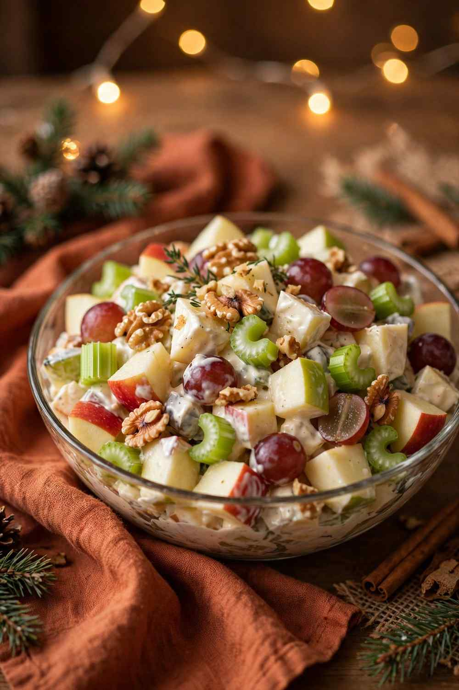
Crisp apples, celery, sweet grapes, and crunchy walnuts fold into a creamy mayonnaise dressing brightened with lemon juice. It is cool, crunchy, and refreshing, with a balance of sweet, tart, and savory in every spoonful. Chill it before serving so the flavors come together, and it makes a lovely light contrast to the rich, hot dishes on the table.
Ingredients
- 3 apples
- 2 celery stalks
- 1 cup grapes
- 1/2 cup walnuts
- 1/2 cup mayonnaise
- 1 tbsp lemon juice.
Directions
- Core the apples and dice them into bite-sized pieces, about 1/2 inch across. Toss them with half of the lemon juice so they do not brown.
- Dice the celery stalks into small pieces and halve the grapes. Roughly chop the walnuts.
- In a small bowl, whisk the mayonnaise with the remaining lemon juice until smooth and creamy.
- Put the apples, celery, grapes, and walnuts in a large bowl and pour the dressing over the top.
- Toss gently until everything is evenly coated in the dressing, being careful not to crush the grapes.
- Cover the bowl and chill in the refrigerator for at least 30 minutes before serving, so the salad is cold and the flavors have come together. Stir once before serving.
25. Brown Butter Glazed Carrots and Parsnips
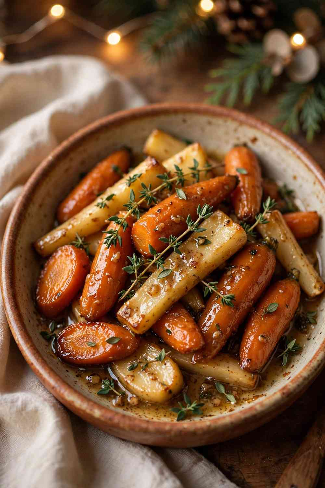
Carrots and parsnips roast until caramelized and tender, then get tossed in nutty brown butter with honey and thyme. The brown butter adds a toasty, almost caramel flavor that makes the vegetables taste richer and more special than plain roasting ever could. It is a simple side with a grown-up finish, perfect for the Christmas table.
Ingredients
- 1 lb carrots
- 1 lb parsnips
- 3 tbsp butter
- 1 tbsp honey
- 1 tsp thyme.
Directions
- Preheat the oven to 425°F and line a large rimmed baking sheet with parchment paper.
- Peel the carrots and parsnips and cut them into sticks about 3 inches long and 1/2 inch thick.
- Spread the vegetables on the baking sheet in a single layer, with space between them so the edges crisp.
- Roast for 30 minutes, turning once halfway through, until tender and caramelized at the edges.
- Meanwhile, melt the butter in a small light-colored pan over medium heat. Swirl often and cook for 2 to 3 minutes, until it foams, the milk solids turn golden brown, and it smells nutty. Remove from the heat at once so it does not burn.
- Transfer the hot vegetables to a serving dish, pour over the brown butter, and add the honey and thyme. Toss gently to coat and serve warm.

Serving & storage tips
Roast vegetables in a hot oven so the edges crisp — and give them space on the tray, or they will steam instead of roast. Make mashed potatoes and gratins ahead and reheat them covered, with a splash of milk or cream to loosen them. Cranberry sauce and salads keep in the fridge, so make them the day before and free up the oven. Store leftovers in airtight containers for up to four days, and reheat roasted sides in a hot oven so they crisp up again.
Related articles
More roundups from the same table:
- 25+ Christmas Breakfast Recipes for a Cozy Holiday Morning — casseroles, pancakes, cinnamon rolls and make-ahead bakes.
- 20+ Christmas Air Fryer Recipes for Easy Holiday Cooking — crispy appetizers, roasted vegetables and festive desserts.
- 35+ Easy Christmas Appetizers for a Crowd — dips, bites, cheese boards and warm starters for your holiday party.
- 30+ Christmas Cookie Recipes Everyone Will Love — classic, chocolate, spiced, filled and decorated cookies.
Keep exploring
- Browse the Lunch & Dinner roundups — mains and sides for midday and evening tables.
- Browse all six categories — breakfast, lunch and dinner, desserts, air fryer, healthy recipes, and appetizers.
- More about the kitchen — what The Tasty Recipe Co is and how it works.
About The Tasty Recipe Co: Learn how we research, organize and review our food collections — see our About Us and Editorial Policy pages.
Recipe results can vary with ingredients, equipment, and technique. See our Disclaimer for food-safety and allergy notes.